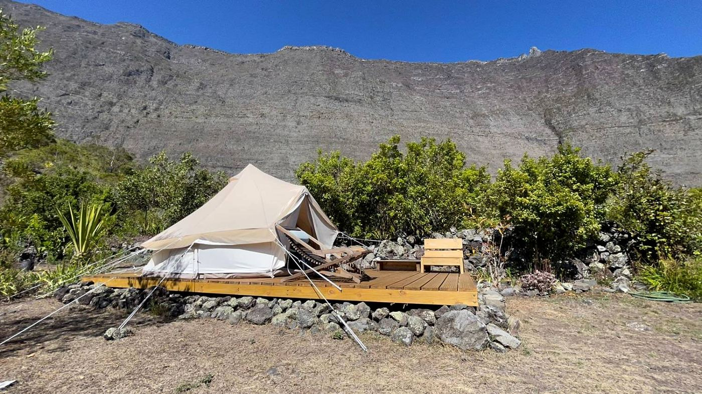

Gîte & chambre d’hôtes · Roche Plate, Mafate
Au cœur du cirque de Mafate, à Roche Plate, ce petit coin unique vous invite à vous ressourcer en pleine nature, entouré de montagne.

L’essentiel
À la sortie de l’îlet de Roche Plate, en direction de Trois Roches, en pleine nature.
Des tipis pour deux avec de vrais matelas et une bonne couette, et un bungalow famille de 4 places.
Dîner et petit-déjeuner partagés, autour de la cuisine de Dominique.
Draps, couettes, serviettes de toilette et gel douche vous attendent : un vrai confort à Mafate.
La Kaz en images
Couchages & confort
10 randonneurs au total : 3 tipis pour couple et un bungalow famille de 4 places.
Draps, couettes, serviettes et gel douche fournis : vous marchez léger.
Ils en parlent
Emplacement 5,0 · Chambres 5,0 · Propreté 5,0 · Service 5,0 · Literie 5,0 · Qualité/prix 4,9. Les randonneurs saluent l’accueil de Dominique et Valou, la table partagée et la beauté du lieu.
« … Un accueil chaleureux, un cadre au top, des couchages de qualité !!! Super !! »
« Tout était exceptionnel : l'accueil de Valérie et Dominique, le repas du soir ainsi que le petit déjeuner pris tous ensemble, dans une ambiance chaleureuse... des espaces aménagés avec goût, tout est propre (toilettes, douche, lieux communs, tente...)... c'est un vrai petit bijou au cœur de Mafate. … »
« Après une descente difficile nous arrivons dans un lieu magique où on en prends plein les yeux. Que dire de l'accueil de Valérie et Dominique juste qu'il est parfait. Et que dire du repas concocté par Dominique juste qu'il était excellent. … »
« Une petite merveille nichée aux confins de l’îlet de Roche Plate. Le site, l’accueil, le gîte et la table, tout est parfait. Le meilleur que nous ayons fait dans Mafate ! Un immense merci à Dominique et Valou pour cette parenthèse enchantée. … »
« Tout est parfait dans ce gite: l'accueil et la gentillesse des hôtes, la qualité des repas et des couchages, la beauté du lieu, etc...Les tipis et les bungalow s'intègrent parfaitement dans le paysage et les hôtes sont aux petits soins. … »
« La chaleur de l'accueil, la beauté et propreté des lieux sont extraordinaires. Dominique une cuisinière hors paire avec ses verrines en entrée, ses desserts ses confitures.. . Valou une conteuse d'histoires sur Mafate insatiable. … »
Extraits d’avis publiés sur la page Tripadvisor de La Kaz l’Infirmière. Lire tous les avis
Venir à pied
Roche Plate se rejoint à pied, par les sentiers du cirque. Le gîte se trouve sur le plateau de Cerf, à la sortie de l’îlet, en direction de Trois Roches.
La table d’hôtes
Le soir, Dominique et Valou vous reçoivent à leur table d’hôtes : un dîner convivial, puis le petit-déjeuner pris tous ensemble avant de reprendre le sentier.
Les randonneurs se souviennent des verrines en entrée, des desserts et des confitures de Dominique.
Demi-pension proposée aux adultes et aux enfants : précisez-la dans votre demande.
Vos hôtes
Dominique a été l’infirmière de Mafate. Elle y a pris sa retraite et vous accueille dans sa maison, autour d’un repas partagé.
Avec Valou, conteuse d’histoires sur Mafate, elles reçoivent leurs invités comme des membres de la famille.
Infos pratiques
À partir de 15 h
Jusqu’à 9 h 30 ; tipis et bungalow libérés pour 9 h
Jusqu’à 10 personnes ; couples, familles et petits groupes
Draps, couettes, serviettes et gel douche fournis
Un acompte confirme votre réservation
Demi-pension : dîner et petit-déjeuner
Sur demande, selon vos dates
Collectée par l’hôte pour les réservations en direct
À pied, par les sentiers de Mafate
Réserver en direct
Dominique et Valou vous répondent personnellement avec le tarif de vos nuitées et de la demi-pension.